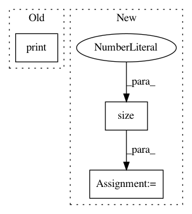

bd570b58cefa57062f8c14e06b83800c52f4925a,sru/sru_functional.py,SRU,forward,#SRU#Any#Any#Any#Any#,545
Before Change
print("lstc[0].size()", lstc[0].size())
lstc_stack = torch.stack(lstc)
if self.nn_rnn_compatible_return:
print("lstc_stack.size()", lstc_stack.size())
return prevx, lstc_stack
else:
return prevx
After Change
if return_hidden:
lstc_stack = torch.stack(lstc)
if self.nn_rnn_compatible_return:
batch_size = input.size(1)
lstc_stack = lstc_stack.view(self.num_layers, batch_size, self.num_directions, self.n_out)
lstc_stack = lstc_stack.transpose(1, 2)
lstc_stack = lstc_stack.contiguous().view(self.num_layers * self.num_directions, batch_size, self.n_out)
return prevx, lstc_stack
else:
return prevx
In pattern: SUPERPATTERN
Frequency: 4
Non-data size: 3
Instances
Project Name: asappresearch/sru
Commit Name: bd570b58cefa57062f8c14e06b83800c52f4925a
Time: 2019-09-18
Author: hp@asapp.com
File Name: sru/sru_functional.py
Class Name: SRU
Method Name: forward
Project Name: cornellius-gp/gpytorch
Commit Name: c63cc933782e2de32c9fe74c18b337b2bbe0f242
Time: 2018-07-19
Author: jrg365@cornell.edu
File Name: test/examples/test_kissgp_variational_regression.py
Class Name: TestKissGPVariationalRegression
Method Name: test_kissgp_gp_mean_abs_error
Project Name: eriklindernoren/PyTorch-GAN
Commit Name: 3c1549620cb4801c12a3d38f91ef03e44f3d5a52
Time: 2018-04-24
Author: eriklindernoren@gmail.com
File Name: implementations/bicyclegan/models.py
Class Name: Encoder
Method Name: forward
Project Name: ixaxaar/pytorch-dnc
Commit Name: d7f916627aca77365beadc2c7c1af6504f445249
Time: 2017-11-30
Author: root@ixaxaar.in
File Name: dnc/sparse_memory.py
Class Name: SparseMemory
Method Name: rebuild_indexes